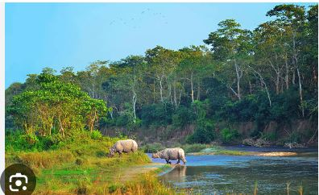

HISTORICAL
PEACEFUL E-Library for the
NEPAL Nepali Students
E-LIBRARY
HISTORICAL
PEACEFUL
E-Library for the
NEPAL Nepali Students
E-LIBRARY
⚲
Home
Historical Thinking
Browse History
About

 One of the oldest natural heritage sites in Nepal is Chitwan National Park. The national park is a habitat to a host to wild animals—the park shelters the endangered one-horned rhinoceros and Royal Bengal tiger. The park is also home to sloth bears, gharials, and wild elephants. Chitwan National Park is also one of the best spots for bird watching. Birds such as kingfisher, Bengal floricans, grass warblers, storks, egrets, etc., are found in the park. Highlights of Chitwan National Park Explore the habitat of the endangered one-horned rhino and Royal Bengal tiger. Take a jeep safari into the wilderness and watch the wild creatures without upsetting their natural environment. Stroll around a Tharu village and observe their lifestyle Enjoy a canoe ride on the Rapti River